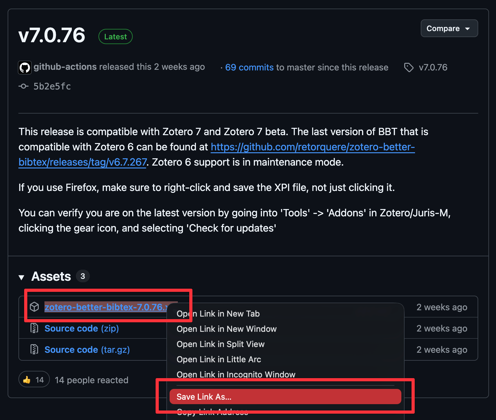
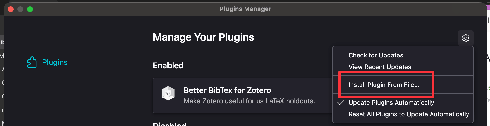
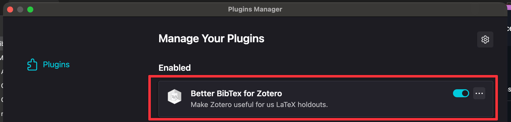
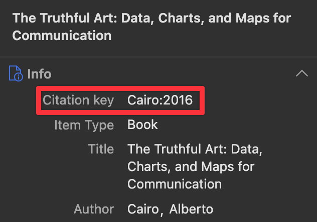
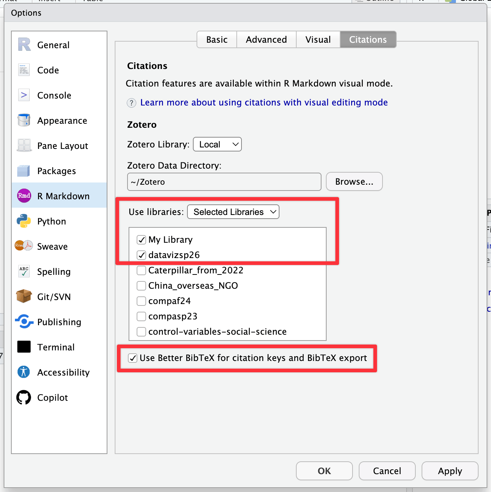
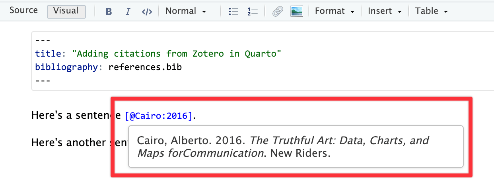
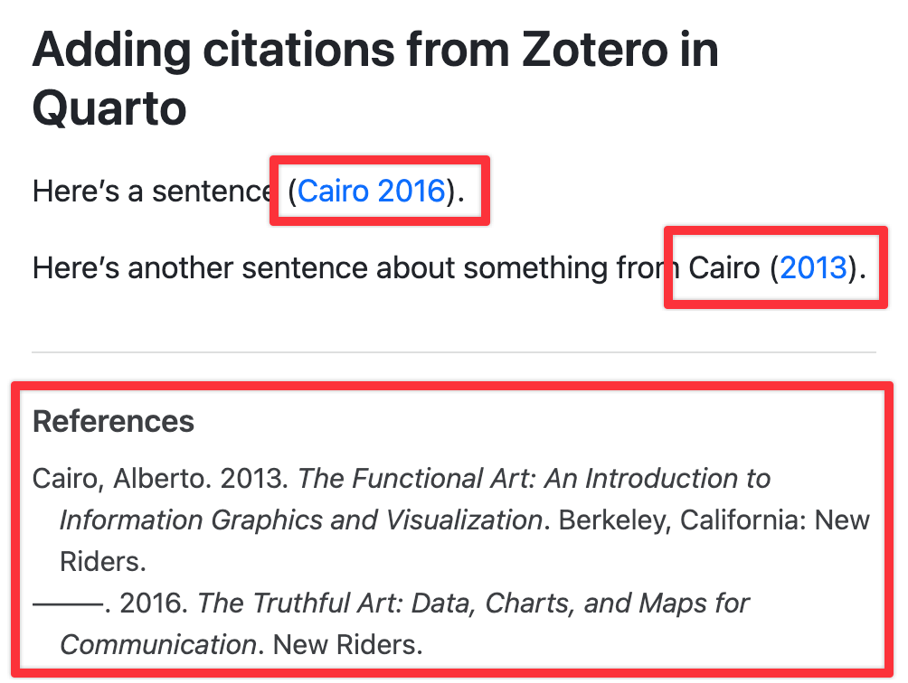

Citations and bibliography
You can access a shared group Zotero library of all the non-web-based class reading references and link it to your Zotero account to easily cite the course materials.
Alternatively, you can download a BibTeX file of all the references. You can open it in BibDesk on macOS, JabRef on Windows, or Zotero on macOS, Windows, and online.
You can use these references in your Quarto documents directly in RStudio! You need to set up a few things first, but then it’s straightforward to get automatic citations in your documents. You can also see the official Quarto documentation for citations in general and the RStudio documentation (and this blog post) for working with citations in RStudio.
Initial set up
Before RStudio can look at and use your Zotero library, you need to do two things first. You only need to do this setup once.
1. Install the Better BibTeX Zotero extension
When you cite things with Quarto, you need to reference entry citation keys, or citekeys. Zotero doesn’t support or make these automatically, but you can install the Better BibTeX for Zotero extension to add citekey support to your library.
Follow the instructions here to do that. Here’s an illustrated version:
Download the latest release to your computer by right-clicking on the
zotero-better-bibtex-VERSION.xpifile at GitHub and choosing “Save as.” Don’t double-click on it or try opening it after downloading it—you don’t need to.
Download XPI from GitHub In Zotero, go to Tools > Plugins and select the “Plugins” page.
Click on the gear icon in the top-right corner and choose “Install Plugin From File”:

Install plugin from XPI file Choose the
.xpifile that you downloaded.Better BibTeX should now appear in your plugin list:

Plugin is installed now
Once it’s installed, you should see a “Citation key” field in each of your Zotero entries. Use that when citing things in your Quarto document.

If you want, you can go to Zotero’s settings and change all sorts of settings for Better BibTeX, like the template it uses for generating citekeys, or auto-exporting collections as .bib files. You can also just leave all the default settings.
2. Tell RStudio about Zotero
Next, we need to tell RStudio that (1) Zotero exists and that (2) it should look at both your main local library and the shared class group.
In RStudio, go to Tools > Global Options > R Markdown > Citations.
Set “Use libraries” to “Selected Libraries” and make sure “My Library” is checked (that’s your stuff that you add on your own), and that the group library that you’ve joined from here is checked.
Make sure “Better BibTeX for citation keys and BibTeX export” is checked too.

Inserting citations
Now that everything is set up, you can insert citation keys and automatically generate citations and bibliographies.
Viewing rendered citations
Once the citation key is inserted, you can hover over it in your .qmd file and see a preview of it:

More importantly, when you render the document to HTML, PDF, Word, or whatever format you’re using, you’ll have the correct citation and an automatic list of references:

Citation syntax
Check the documentation for full details of how to do this. Essentially, you use @citationkey either inside square brackets ([]) or outside of them, depending on how you’re using the reference in your text:
| Type… | …to get… |
|---|---|
|
Causal inference is neat (Rohrer 2018; Angrist and Pischke 2015). |
|
Causal inference is neat (see Rohrer 2018, 34; also Angrist and Pischke 2015, chap. 1). |
|
Angrist and Pischke say causal inference is neat (2015; see also Rohrer 2018). |
|
Angrist and Pischke (2015, chap. 1) say causal inference is neat, and Rohrer (2018) agrees. |
Changing citation styles
By default, Quarto uses the Chicago Manual of Style author-date format, but you can choose from 2,000+ at this repository. Download the CSL file you want to use, put it in your project folder, and add an entry to the YAML metadata:
---
title: "Adding citations from Zotero in Quarto"
bibliography: references.bib
csl: apa.csl
---Some of the most common CSLs are: